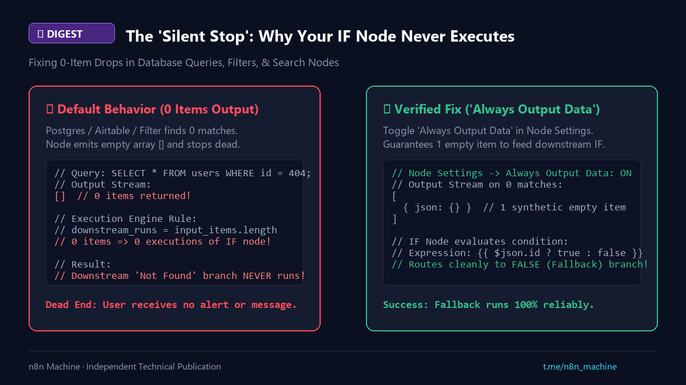

Digest
Fixing 0-Item Drops & The Silent IF Node Halt
- Published
- Checked against
- docs.n8n.io
- Status
- Corrected, revision 2

A query that returns nothing ends the run without an error.
01Symptom and cause
- A Postgres, Airtable or Filter node finds zero matches, and the downstream
IFnever runs. - n8n is item-driven: 0 items out means 0 runs after.
02Fix
- Open the node Settings and turn on Always Output Data.
- It now emits one empty item, so the
IFevaluates and your "not found" branch runs.
Sourcen8n Flow Logic Docs